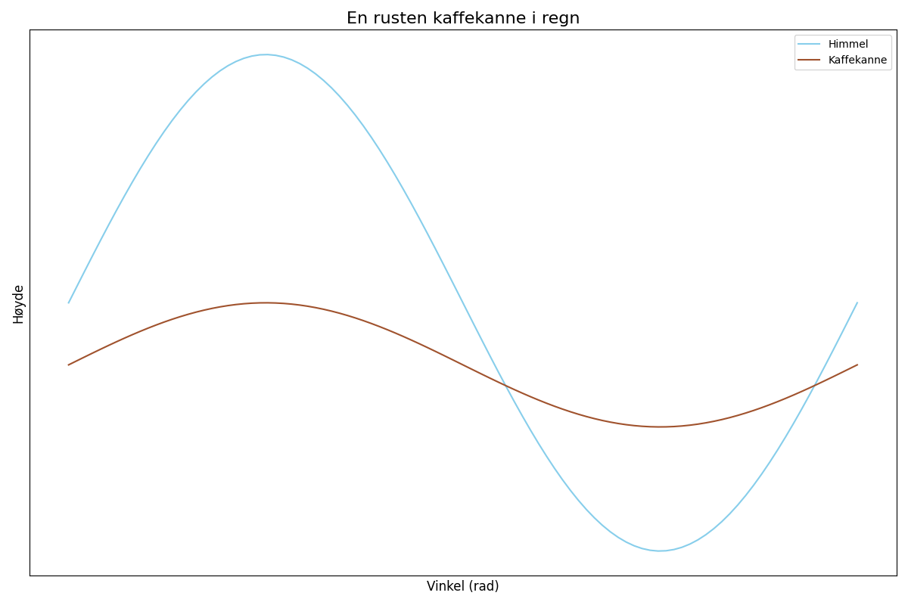

En rusten kaffekanne i regn, stod stille ved veiens tegn. Den drømte om bønner og varme kull, mens himmelen gråt av sølv og gull.

import matplotlib.pyplot as plt
import numpy as np
# Dikt
dikt = """
En rusten kaffekanne i regn,
stod stille ved veiens tegn.
Den drømte om bønner og varme kull,
mens himmelen gråt av sølv og gull.
"""
# Definer data for en 2D-plot (himmel og kaffekanne)
x = np.linspace(0, 2 * np.pi, 100)
himmel_y = np.sin(x) * 2 + 1 # Simulerer himmelens form
kannens_y = np.sin(x) * 0.5 + 0.5 # Simulerer kaffekannens form
# Lag en figur og akser
fig, ax = plt.subplots(figsize=(12, 8))
# Plott himmelen
ax.plot(x, himmel_y, color='skyblue', label='Himmel')
# Plott kaffekannen
ax.plot(x, kannens_y, color='sienna', label='Kaffekanne')
# Legg til etittel og akseetiketter
ax.set_title('En rusten kaffekanne i regn', fontsize=16)
ax.set_xlabel('Vinkel (rad)', fontsize=12)
ax.set_ylabel('Høyde', fontsize=12)
ax.set_xticks([]) # Fjern tickmarkene på x-aksen
ax.set_yticks([]) # Fjern tickmarkene på y-aksen
# Legg til en legende
ax.legend(loc='upper right')
# Juster layout
plt.tight_layout()
# Lagre figuren
plt.savefig(output_path)execution_ok=True fallback_used=False image_ok=True